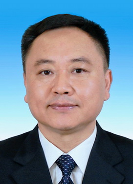
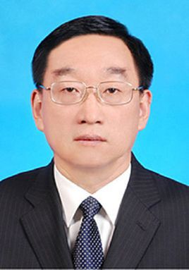

刘慈欣：1963年6月出生于北京，祖籍河南省信阳市罗山，山西阳泉人 ，本科学历，高级工程师， 科幻作家，中国作家协会会员、第九届、第十届全委会委员， 中国科普作家协会会员，山西省作家协会副主席 ，阳泉市作家协会副主席，同时也是中国科幻小说代表作家之一。 1985年10月参加工作，作品蝉联1999年—2006年中国科幻小说银河奖，2010年赵树理文学奖，2011年《当代》年度长篇小说五佳第三名，2011年华语科幻星云奖最佳长篇小说奖，2010、2011年华语科幻星云奖最佳科幻作家奖，2012年人民文学柔石奖短篇小说金奖，2013年首届西湖类型文学奖金奖、第九届全国优秀儿童文学奖。代表作有长篇小说《超新星纪元》《球状闪电》《三体》三部曲等，中短篇小说《流浪地球》《乡村教师》《朝闻道》《不能共存的节日》《全频带阻塞干扰》等。其中《三体》三部曲被普遍认为是中国科幻文学的里程碑之作。 2015年8月23日，凭借《三体》获第73届世界科幻大会颁发的雨果奖最佳长篇小说奖，为亚洲首次获奖 。2017年6月25日，凭借《三体3：死神永生》获得轨迹奖最佳长篇科幻小说奖 。2018年11月8日，获2018年克拉克想象力服务社会奖。 2019年2月5日，刘慈欣作品改编电影《流浪地球》 和《疯狂的外星人》上映 ，8月，获2019福布斯中国100名人榜荣誉 。2019年9月23日，刘慈欣长篇小说《三体》入选“新中国70年70部长篇小说典藏”。
李国英：男，汉族，1963年12月生，河南禹州人，1984年7月参加工作，1988年8月加入中国共产党，在职研究生学历，理学博士学位，教授级高级工程师。 现任中共十九届中央委员，水利部党组书记、部长。
男，汉族，1954年6月生，北京人，1980年5月加入中国共产党，1971年9月参加工作，本科毕业于东北工学院，研究生毕业于华北水利水电学院北京研究生部农田水利工程专业，研究生学历，工学硕士，教授级高级工程师。 现任十三届全国政协农业和农村委员会副主任。